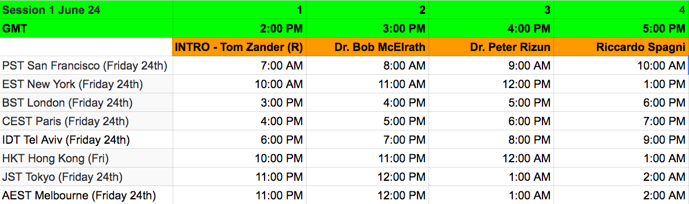
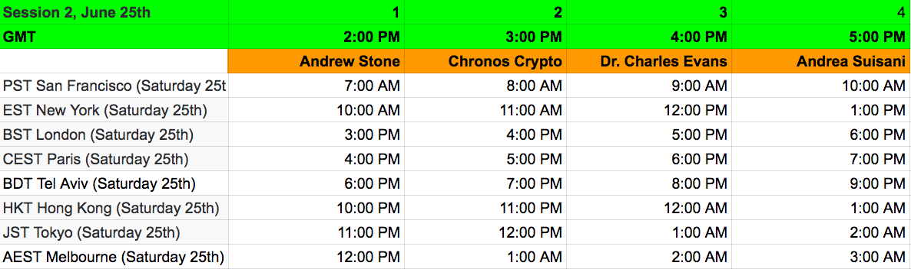
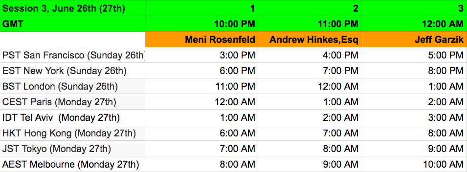

Presentations & Schedule
Session 1, June 24th, 14:00 GMT Start

Session 2, June 25th, 14:00 GMT Start

Session 3, June 26th, 22:00 GMT Start

Opening Notes
Steady growth comes from steady innovation
Tom Zander
This talk takes a look at bitcoin communication on the network. Tom will explain how it works and attempts to find various parts that could become better. He will explain one solution for scaling which he coined Optimistic Mining more in depth
Braiding the Blockchain
Dr. Bob McElrath
The "chain" structure of Bitcoin only works if the network is
synchronous and new blocks are propagated with zero latency. Since the real
network is asynchronous, orphans (stale blocks) appear due to this
communications latency. By allowing blocks to name multiple parents, we can tie
up asynchronously produced blocks into a specialization of a Directed Acyclic
Graph we call a "braid". The orphan problem causes a race condition among
miners that reduces the security of the system [Eyal et. al.]. We present an
analysis of this braid structure on a Bitcoin-like network and present (1) how
to achieve the fastest possible block time in such an asynchronous network (2)
an analysis of the Bitcoin network under this additional assumption -- which
indicates an optimal equivalent block time of 11.6s. Moving to a braid can
drastically increase the transaction rate accepted by the network while reducing
the block time, provide a mechanism to heal network splits, and dynamically
adjust to changing network conditions.
Block Propagation and the Z-parameter
Dr. Peter Rizun
This talk will explore how block propagation, as described by the Z-parameter, affects both the market price for block space and a node’s ability to "keep up” with the blockchain. The key takeaway is that an increase in the quantity of block space produced by miners naturally corresponds with improvements in the network's ability to produce that block space. The network can grow organically without the need for top-down interventions by developers.
Dynamic Block Size Caps
Riccardo Spagni
What should the long term solution for the Bitcoin blocksize be? Although there is much debate about how to implement it, there isn't much contention over the fact that current static block size cap is not optimal in the long term. An overview of existing proposals, along with a comparison and history of Monero's working dynamic block size.
Expedited Forwarding in Bitcoin Unlimited
Andrew Stone
To optimise the propagation of transactions and blocks, it makes sense to minimize the per-hop latency -- that is, minimize the time it takes to move data from one node to another. Currently, the bitcoin network uses a three message sequential conversation to send a block or transaction. This talk will report on efforts and discuss strategies to reduce this to a single message, and will also provide a general Bitcoin Unlimited status update.
Xtreme Thinblocks
Chronos Crypto
The bandwidth and time required to propagate new blocks on the Bitcoin network presents a scaling challenge. Xtreme Thinblocks uses a unique Bloom filter to take advantage of the shared knowledge of pending transactions, reducing the resources needed to send new blocks between nodes.
The Micro-Global Economy
Dr. Charles Evans
My presentation focuses on Bitcoin use cases in small-scale, cross-border trade. I am Executive Director of Conscious Entrepreneurship Foundation, which promotes the use of Bitcoin among the world's unbanked and underbanked. Currently, we work primarily with entrepreneurs in Sub-Saharan Africa, mostly in West Africa: Ghana, Nigeria, and Sierra Leone. For the 5.5 billion potential Bitcoin users, its use as a P2P medium of exchange is of greatest value.
Block Propagation using Xthin: Setup and Testing Process
Andrea Suisani
The main objective was to obtain useful BU node performance statistics for real-time block propagation within and outside the Great Firewall of China (GFC) along with a more in deep knowledge of performance gain brought by Xthin technology when used on the broad bitcoin p2p network.
During the talk I’ll cover all the needed steps we had to made to achieve our goal and what we have learnt about the interaction between the bitcoin p2p network and the GFC.
A fork in the road: Must we choose a path?
Meni Rosenfeld
Many people have been anxious about choosing sides in the debate over Bitcoin's scaling and governance, and dreading the possibility of a contentious hard fork tearing the community apart. But do we really have to choose? What if splitting the Bitcoin network can actually be a natural process in Bitcoin's evolution? And where does the power to decide Bitcoin's rules ultimately come from, anyway?
The Passion of the TheDao
Drew Hinkes
Analysis of TheDao's governance failures and how future smart contract platforms can avoid disaster.
Final Thoughts
Pushing the envelope - How Scaling Leads to Scaling
Jeff Garzik
A risk posture based on current technical capabilities will overly constrain any system's growth. Bitcoin and the world at large are complex dynamic systems that respond to feedback. A useful system growing will be met with virtuous, self-reinforcing cycles of improvement as capacity challenges appear.